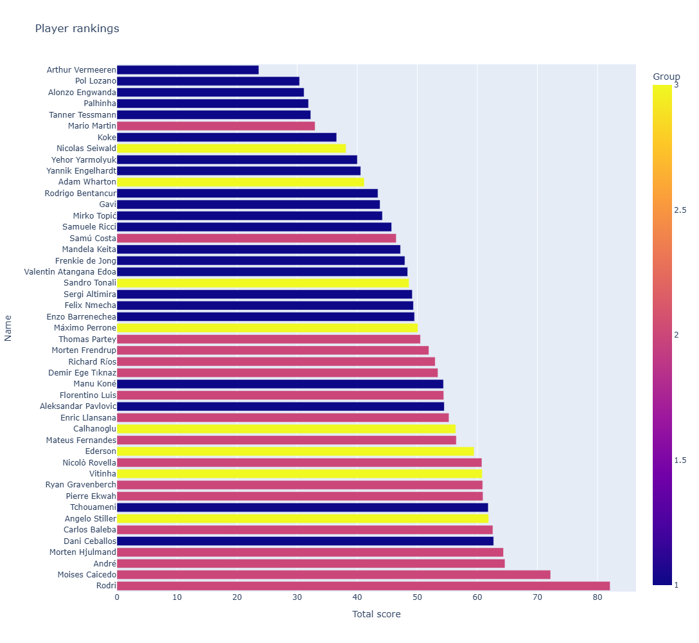
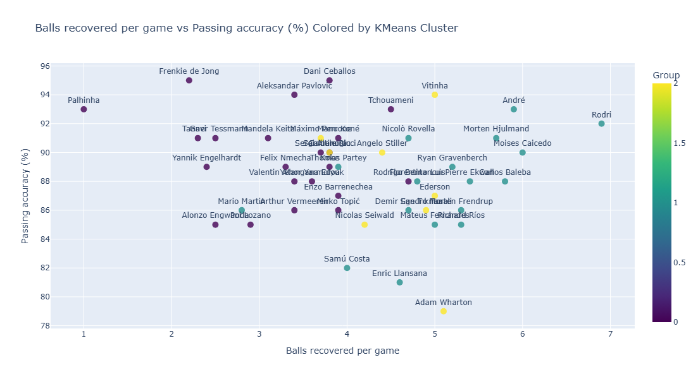

About Me
I am a Computer Science graduate with a strong passion for software development, machine learning, and data analysis. With hands-on experience in Python, Java, HTML and more,
I have successfully built projects ranging from reinforcement learning models to full-stack web applications.
Whether it was analysing data to determine the viability of an unorthodox build in a video game or simply debugging some code, I have always found great satisfaction in solving complex problems. With this in mind,
it was only natural that I found myself gravitating towards the subject of Computer Science, eventually achieving a degree in the subject from The University of Exeter.
Throughout my academic journey, I have demonstrated adaptability, good problem-solving skills, and teamwork, collaborating on projects such as a sustainability-themed web app.
For my dissertation, I optimized agent communication using reinforcement learning and PyTorch, showcasing my ability to apply cutting-edge AI techniques.
I am eager to bring my technical expertise and analytical skills into a professional setting, where I can continue to learn and make meaningful contributions to solving real world problems.
Show CV
Projects

Defensive midfielders analysis
Ranked defensive midfielders using Python , weighted performance metrics, and K-means clustering to identify top-performing profiles. Click here to view on Github.
Details
Defensive Midfielders Analysis
Introduction
The purpose of this project is to rank a selection of professional football players, specifically midfielders, based on how effective they could be as signings for the defensive midfielder role. To better understand the long-term value each player could offer, longevity and potential for further development will be taken into account on top of current ability.
Pandas
Plotly
Scikit-learn
Data
All data for this project was sourced from SofaScore and reflects each player’s domestic league performance during the 2024/25 season, with the following exceptions:
Richard Rios’ data was taken from the 2024 season from the Brazilian top flight. This is due to the Brazilian league starting and finishing in the same calendar year.
Rodri’s data was taken from the 23/24 season due to a significant injury keeping him on the sidelines for the majority of the 24/25 campaign.
The metrics selected for this project were chosen to reflect the key responsibilities of a defensive midfielder. Each metric was assigned a weighting based on its relative importance to the role. The selected metrics and their corresponding weightings are outlined below:
Metric Weighting
Balls recovered per game
20
Key passes per 90
20
Passing accuracy (%)
20
Duels won (%)
10
Total duels won per game
10
Interceptions per 90
5
Tackles per 90
5
Aerial duels won per 90 (%)
5
Long pass accuracy (%)
5
Minutes played (League)
5
Successful dribbles per 90 (%)
5
Successful dribbles per 90
1
Aerial duels won per 90
1
Yellow cards
-1
Red cards
-1
Cards per 90*
-1
Errors leading to goal or shot
-1
Errors leading to goal or shot per 90
-5
Age
-5
*Calculated manually by taking the total number of yellow and red cards, dividing by ‘minutes played’ and multiplying by 90
Metric Selection Methodology
The metrics were selected to showcase multiple elements of player performance, with an emphasis on defensive output, possession regain, aerial effectiveness, availability, ball progression, attacking contribution, and error frequency. A significant portion of metrics selected were on a per-90 basis to control for differences in playing time and enable comparability across players.
1. Defensive & Possession Regain Metrics
‘Interceptions per 90’, ‘tackles per 90’, ‘balls recovered per game’, ‘total duels won per game’, and ‘duel won (%)’ were selected to quantify defensive activity and efficiency in regaining possession. These variables collectively capture both volume (engagement frequency) and effectiveness (success rates) in defensive actions.
2. Aerial Performance
‘Aerial duels won per 90’ and ‘aerial duels won per 90 (%)’ were included to isolate aerial contribution. This accounts for a player’s impact in contesting crosses, long balls, and set pieces in both defensive and attacking phases.
3. Availability & Disciplinary Profile
‘Minutes played (League)’, ‘yellow cards’, ‘red cards’, and ‘cards per 90’ were incorporated as indicators of durability, selection consistency, and disciplinary risk. Minutes played serves as a proxy for coach trust and fitness reliability, while card metrics contextualise behavioural risk.
4. Ball Progression & Creative Output
‘Key passes per 90’, ‘passing accuracy (%)’, ‘long pass accuracy (%)’, ‘successful dribbles per 90’, and ‘successful dribbles per 90 (%)’ were chosen to evaluate on-ball contribution. These metrics measure a player’s role in ball retention, progression through passing or carrying, and chance creation.
5. Error Frequency & Negative Impact
‘Errors leading to a shot or goal’ (total and per 90) were included to account for mistakes that could cause losses. Incorporating both raw totals and per 90 metrics ensures visibility of risk independent of playing time.
6. Age as a Development Variable
‘Age’ was incorporated as a contextual variable to approximate career phase, potential for further development, and projected longevity. While not a performance metric, it provides enormous value when assessing long-term contribution.
Method
1. Data Preparation
First, the data was converted to the appropriate data types within Python (e.g., numeric variables stored as integers or floats rather than strings). Percentage-based fields were cleaned by removing the % symbol and converting them to floating-point format to enable numerical computation.
2. Feature Structuring & Clustering
To help identify what types of players perform the best, I implemented an unsupervised clustering approach using the K-means algorithm from scikit-learn. Players were grouped according to similarity across selected metrics, with most available performance metrics being considered. However, certain variables were excluded to avoid redundancy or distortion:
‘Long pass accuracy (%)’ – Overall passing accuracy (%) was retained as a sufficiently representative measure of passing proficiency for this context.
‘Minutes played (league)’ – Excluded as it reflects opportunity rather than underlying ability or player profile.
‘Yellow cards’ and ‘Red cards’ – The consolidated cards-per-90 metric was used to capture disciplinary records without duplication.
‘Errors leading to goal or shot’ – Omitted due to sensitivity to total minutes played.
‘Age’ – Removed as the objective was to cluster based purely on player characteristics rather than demographic attributes.
3. Exploratory Visualization
Given the demands of the role, regaining possession and retaining the ball were identified as the most important attributes. Accordingly, ‘balls recovered per game’ was selected as a measure of defensive output, and ‘passing accuracy (%)’ as an indicator of distribution reliability.
4. Normalisation & Weighted Scoring Model
All performance metrics were normalised to ensure comparability across differing scales and distributions. Each variable was then multiplied by a predefined weight reflecting its relative importance for the role.
$$Score_p = \sum_{m=1}^{n} \left( w_m \times x_{pm} \right)$$
\( x_{pm} \) represents the normalised value of metric \( m \) for player \( p \).
\( w_{m} \) represents the assigned weight for metric \( m \)
Results and Conclusion
The scatter plot comparing ‘balls recovered per game’ against ‘passing accuracy (%)’ identified Rodri as the clear standout profile, combining elite ball-winning output with exceptional distribution reliability. Andre also performed strongly across both metrics, emerging as the next most impressive performer across the two metrics.

Group 1 (22 players) performed weakest overall. Only two players placed inside the top 10 — Dani Ceballos (5th) and Aurelien Tchouameni (8th) — with two further players finishing inside the top 20: Aleksandar Pavlovic (17th) and Manu Kone (19th).
Group 2 (17 players) produced the strongest overall outcomes. Seven of the top 10 ranked players belonged to this cluster, including all of the top four: Rodri (1st), Caicedo (2nd), Andre (3rd), and Morten Hjulmand (4th). Only two Group 2 players ranked outside the top 25 — Alan Varela (32nd) and Joao Palhinha (42nd). Overall, this cluster demonstrated the strongest alignment with the weighted attributes defined in the model.
Group 3 (8 players) delivered more mixed results, broadly closer to Group 1 than Group 2 in aggregate performance. Four players placed inside the top 20: Angelo Stiller (7th), Vitinha (11th), Ederson (13th), and Hakan Calhanoglu (15th). However, interpretation should account for cluster size, as Groups 1 and 2 each contained more than double the number of players in Group 3.
Reflection/Future Improvement
While the framework provides a structured method for comparing players within the defensive midfield role, several areas could be strengthened.